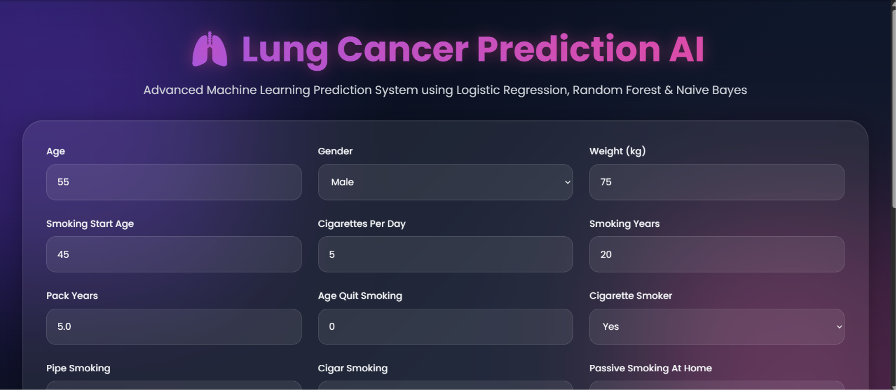
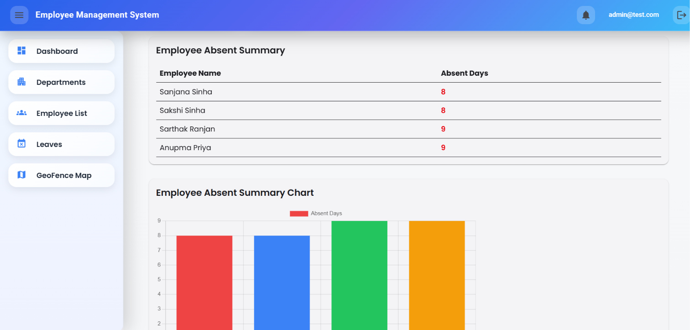

Programming
C++ · Java · C# · Python · JavaScript
OPEN TO SOFTWARE ENGINEERING OPPORTUNITIES
I'm Sanjana, an aspiring software engineer with hands-on experience in full-stack development and machine learning. I enjoy turning complex ideas into practical, thoughtful applications.
I'm a Computer Science graduate focused on software development, backend systems, and applied machine learning. I like understanding how things work—from a clean user interface to the APIs and data models behind it.
Through my internship and personal projects, I've worked with modern web technologies, relational databases, and ML workflows. I'm looking for opportunities to learn from a strong engineering team and contribute with care.
A practical toolkit across application development, data, and core computer science.
C++ · Java · C# · Python · JavaScript
Angular · HTML/CSS · ASP.NET Core · Flask · REST APIs
Scikit-learn · Pandas · NumPy · Matplotlib · PCA · SHAP · LIME
SQL Server · MySQL · EF Core · DBMS · OS · Networks · DSA
Also familiar with Git, GitHub, VS Code, Jupyter Notebook, SignalR, and Leaflet.
Built to explore real workflows, connect systems, and apply what I learn.

A Flask web application that takes user-provided demographic, smoking-history, exposure, and related inputs, then displays risk estimates from three machine learning models.

A web application for employee administration with separate admin and employee workflows, built around attendance, leave processing, and task coordination.
NOTE Screenshots show project interfaces supplied by the developer. Lung-cancer percentages are example risk estimates, not model-accuracy scores. Both applications run locally; neither has a live demo link.
Amnex Infotechnologies Pvt. Ltd. · Ahmedabad
Round 1 · All India Rank 1236
Recognized for web development work.
Certificate from IIT Roorkee.
HAVE AN OPPORTUNITY?
I'm open to entry-level software engineering opportunities and teams that value curiosity, thoughtful engineering, and continuous learning.